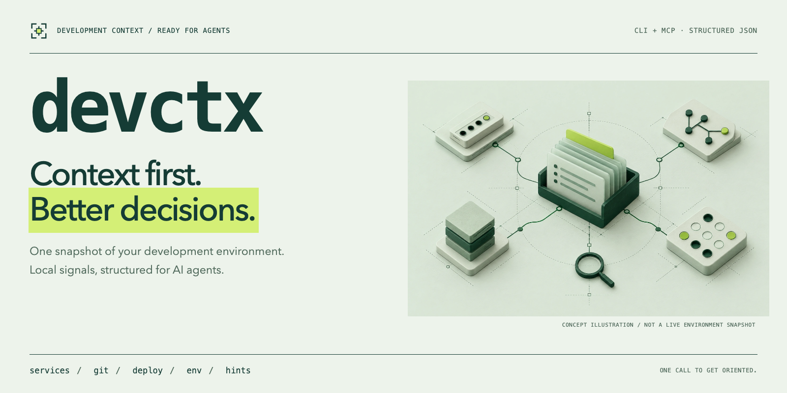
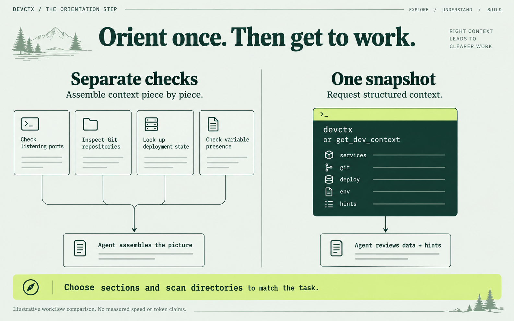
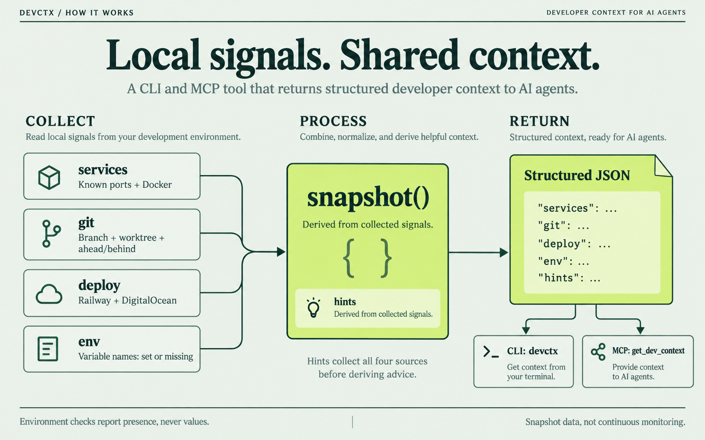

Context first.
Better decisions.
Bring local development signals into one structured snapshot. Services, Git, deployment context, variable presence, and derived hints help an agent orient before it acts.


devctx --git --hints --scan-dir .Scope the output to the task. Review the hints.Orient once. Then build.
Request context in one call instead of assembling each signal separately. The snapshot is a starting point, not a replacement for task-specific investigation.


Choose scan directories deliberately. The default Git scope is the current repository, or your home directory when no repository root is found. Requesting hints runs all four source collectors, even if only the hints field is returned.
Local signals. Shared context.
Collectors feed snapshot(). Derived hints and requested fields return as JSON through the CLI or MCP tool.


- servicesKnown listening ports and Docker container information.
- gitBranch, worktree status, upstream ahead/behind counts, and recent commit information.
- deployRailway project context and DigitalOcean droplets, where configuration and CLI tools are available.
- envNames of expected variables that are set or missing. Variable values are not returned.
- hintsPrioritized heuristics derived from collected signals. Review them in the context of your project.
Clarity, by design.
Field-guide precision: pale mint, deep forest, lime highlights, and measured monospace details.
The generated hero and diagrams are conceptual illustrations. They contain no captured machine state and make no measured speed or token-savings claims. See the brand and rendering guide for asset sources and editing instructions.